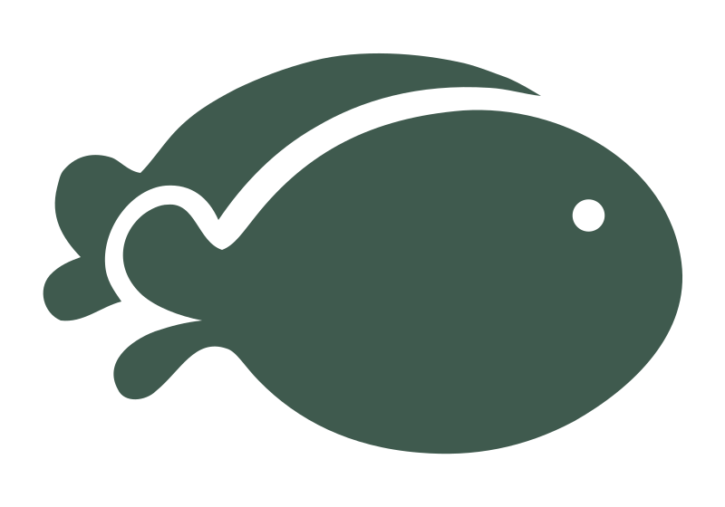

FATFISH NOTES / VECTOR MASTER
肥鱼笔记 · 叠页
根据已选定的第二轮③重绘。纯矢量路径，鱼眼与层间留白真正透明。
 透明标志 · 浅底
透明标志 · 浅底
透明标志 · 深底透明孔洞与留白
单色 · 彩色底标志实际尺寸 · 浅底
16—24 px 使用小尺寸版；32 px 起使用标准版。此处按正方形图标槽等比显示。
16 px 光学校准 · 放大 8 倍观察
小尺寸版仍保留两层。浅底页片色略加深，增强轮廓识别；放大图用于看像素，不代表实际使用大小。
使用与下载
墨绿 #26362F页片绿 #B7C9B3米白 #F7F4EB小尺寸页片绿 #809D7B
当前交付为独立品牌图形素材。中文与英文名称未包含在 SVG 中，避免字体依赖。